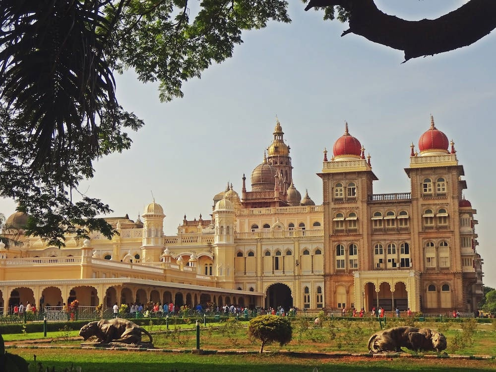
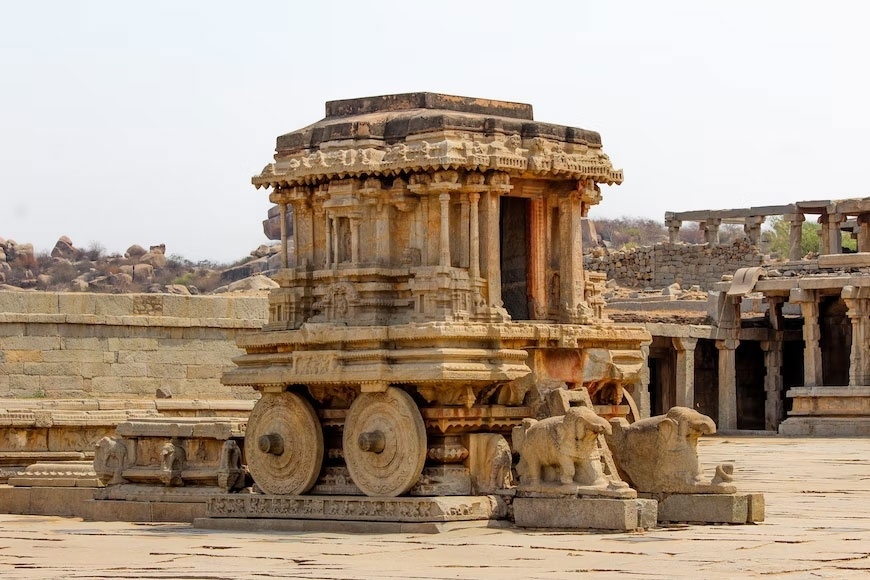
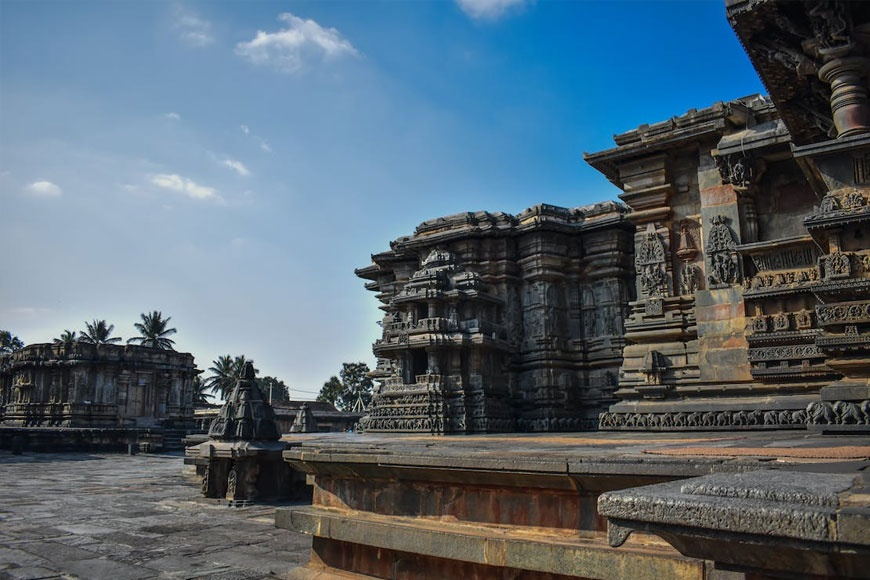
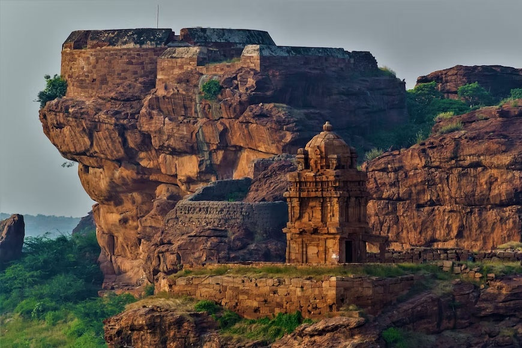
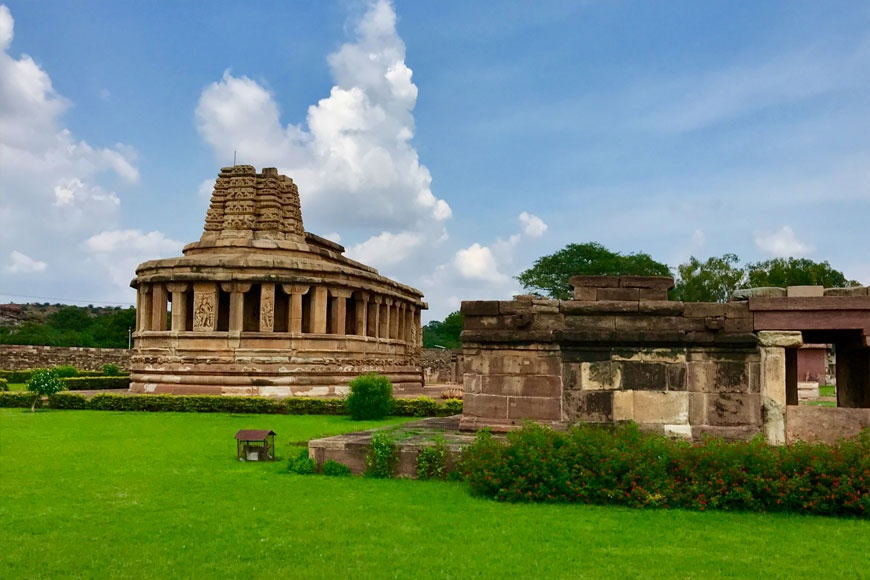
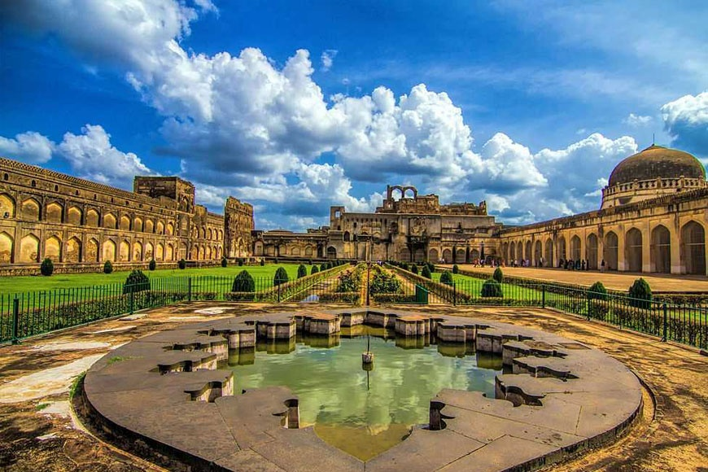
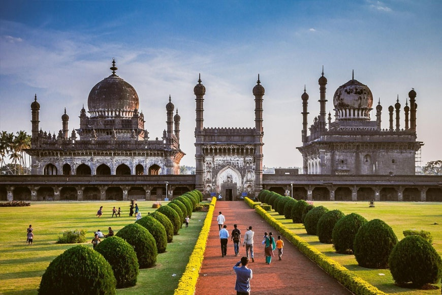
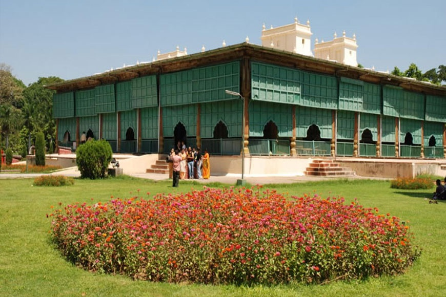

Some Important Historical places of Karnataka
- Hampi
- Belur & Halibedu
- Badami
- Aihole and Pattadakal
- Mysore
Importance of Historical Places
- Cultural Heritage
- Education
- Tourism
- Memory Preservation
Gallery

Mysore Palace

Hampi

Belur & Halibedu

Badami

Aihole and Pattadakal

Bidar

Bijapur

Srirangapatna